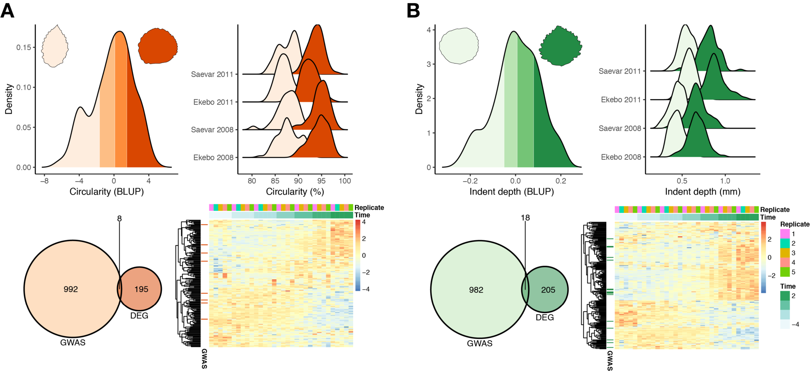

AspLeaf GWAS
Niklas Mähler
Group meeting 2019-02-08
GWAS data
- 4.5 million SNPs
-
3 main leaf traits
- Area
- Circularity
- Indent depth
Data preparation
-
Best linear unbiased predictors (BLUPs)
- One trait value per genotype
- Convert VCF files to plink format
Software
- GEMMA for association mapping
- plink for data manipulation
-
Working on an updated workflow
- snakemake
- Better structure
- Better reproducibility
Top 1000 SNPs
Top 1000 genes
SNP context among top 1000 genes

Phenotype extreme DE
Enrichment of DEGs among GWAS genes
- Gene set enrichment analysis
- Indent depth genes significant (q = 0.0009)
- Circularity genes significant (q = 0.009)
- Area genes not significant
Connecting this with the eQTL paper
DEGs are often eGenes
- Area: 80/182
- Circularity: 78/203
- Indent depth: 83/223
DEGs are more central in the co-expression network

DEGs have relaxed selection constraint